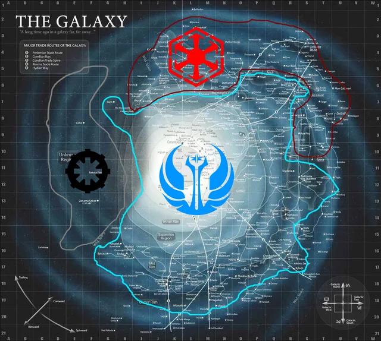

1. Dönem
Eski Cumhuriyet
Binlerce yıl önce Galaktik Cumhuriyet ve Jedi Tarikatı galaksinin temel düzenini kurmuştu. Bu çağda Sith imparatorlukları ve Jedi arasındaki savaşlar, galaksinin siyasi haritasını şekillendirdi.
Coruscant, Dromund Kaas ve Outer Rim cepheleri gibi alanlarda güç dengesi sürekli değişiyordu. Cumhuriyet ideal olarak birleşik bir gelecek sunsa da, Sith etkisi galaksinin her krizinde yeniden ortaya çıktı.